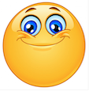
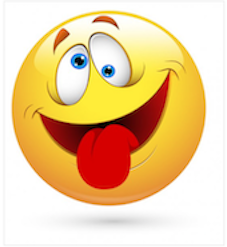

Cet objet va servir à récupérer des informations sur l'événement déclenché (touche du clavier enfoncée, coordonnées du curseur, etc).
var masection=document.getElementById('cours');
var titre=document.getElementById('evenement');
var contenu1=document.getElementById('aremplir1');
masection.addEventListener('click',function(e){titre.innerHTML=titre.innerHTML+" et l'objet Event ";contenu1.innerHTML=" a modifié le texte du titre.";});var mondiv=document.getElementById('objetEvent');
var contenu2=document.getElementById('aremplir2');
mondiv.addEventListener('mouseover',function(e){mondiv.className="couleur";contenu2.innerHTML="a modifié la couleur de fond du bloc.";});| événement | action qui le déclenche | identification de l'élément (entre les balises <body > ) | code de création de l'événement (entre les balises <script > ) |
|---|---|---|---|
| click | cliquer sur l'élément (appuyer puis relâcher) | |
exemple : pour changer de couleur de fond à la ligne d'identifiant 'ligne1' en lui attribuant une classe css nommée "bleu" (et référencée dans la feuille de style)
|
| dblclick | double-cliquer sur l'élément | |
exemple : pour rajouter du texte dans un élément inline d'identifiant "aremplir3" ;
|
| mouseover | faire entrer le curseur sur l'élément | |
exemple : pour changer l'adresse de l'image d'identifiant 'icone' en modifiant son attribut src 
|
| mouseout | faire sortir le curseur de l'élément | |
|
| mousedown | appuyer(sans relâcher) sur le bouton gauche de la souris au dessus de l'élément | |
exemple : pour rendre visible ou cacher une image d'identifiant 'cache' avec la propriété display  Remarque : dans ce cas, l'objet (ici l'image) n'est pas affichée et sa place n'est pas réservée (la hauteur de ligne varie) |
| mouseup | relâcher sur le bouton gauche de la souris au dessus de l'élément | |
exemple : pour rendre visible ou cacher une image d'identifiant 'vu' avec la propriété visibility Remarque : dans ce cas, l'objet (ici l'image) est juste masqué et sa place est réservée (la hauteur de ligne ne varie pas) |
| mousemove | faire déplacer le curseur sur l'élément | |
exemple : déplacer le curseur sur les deux premières cases de la ligne d'identifiant 'ligne7' va lui changer sa couleur en modifiant son attribut de style backgroundColor Remarque : e.clientX et e.clientY sont les coordonnées de la souris. |
Vous trouverez ici un poème : à vous de modifier la page de style et de rajouter des événements pour en rendre sa lecture "à la souris" dynamique et colorée.
Les apparitions/disparitions d'images seront aussi les bienvenues.
Vous pouvez prendre un autre poème si vous le souhaitez.
<tr id="ligne1" >var ex1=document.getElementById('ligne1'); // je récupère l'élément
ex1.addEventListener('click',function(e){ex1.className="bleu";}) // je lui affecte l'événement
function(e){} est l'architecture de la fonction "type" ; le e passé en paramètre permet de faire référence à l'événement par exemple pour récupérer les coordonnées de la souris (e.clientX, e.clientY).
Entre les accolades, on écrit tout ce que l'on veut qui soit exécuté lors du clic (ou de l'événement souris considéré).
J'ai fait ici le choix de mettre le script javascript dans la page html ; on verra une prochaine fois comment le mettre dans un ficher externe et comment y accéder depuis la page HTML.